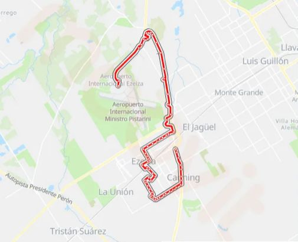

Recorrido y Paradas
La Línea 518 realiza un recorrido estratégico entre el Aeropuerto Internacional Ministro Pistarini y la Estación Ezeiza, conectando terminales, sectores urbanos y puntos de acceso importantes del municipio.
El servicio permite que pasajeros y trabajadores del aeropuerto puedan trasladarse fácilmente hacia conexiones ferroviarias y otras líneas de transporte urbano.

Recorrido Principal
El trayecto inicia en el Aeropuerto Internacional Ezeiza y continúa por distintas terminales y zonas urbanas hasta llegar a la Estación Ezeiza del Ferrocarril Roca.
Este recorrido facilita la conexión con Plaza Constitución y otros destinos del Área Metropolitana de Buenos Aires.
Paradas Principales
- Aeropuerto Internacional Ezeiza
- Terminal A
- Terminal B
- Sector de Transporte Público
- Puente 12
- Estación Ezeiza
Conexiones Urbanas
La Línea 518 permite combinar el viaje con servicios ferroviarios, taxis, remises y otras líneas de colectivos que operan en la zona de Ezeiza.
Es una alternativa utilizada por pasajeros que necesitan trasladarse entre el aeropuerto y distintos puntos del conurbano bonaerense.